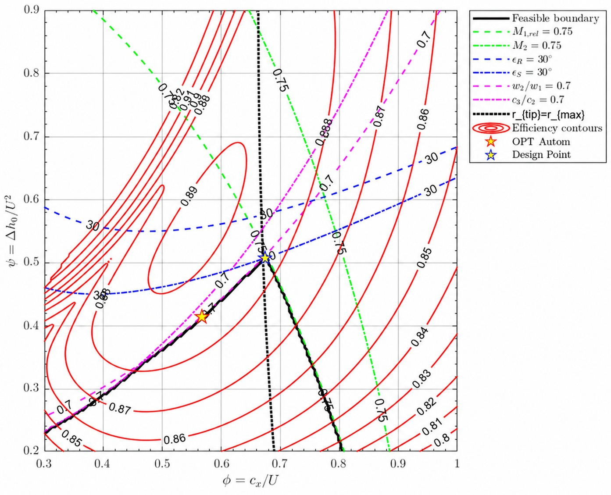
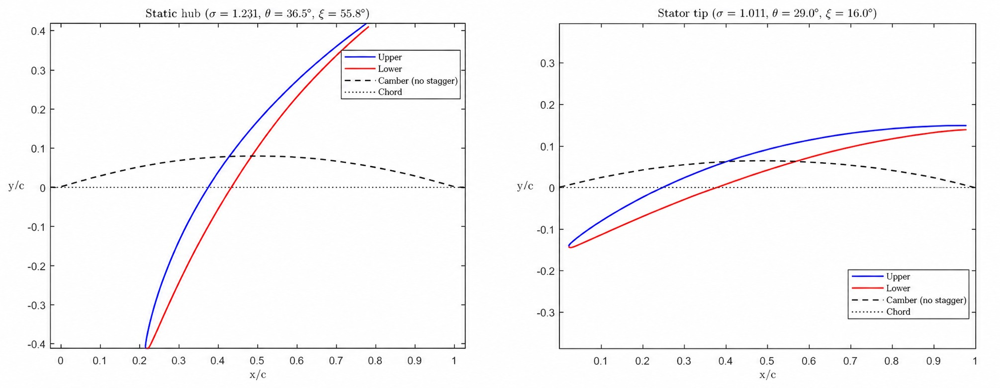
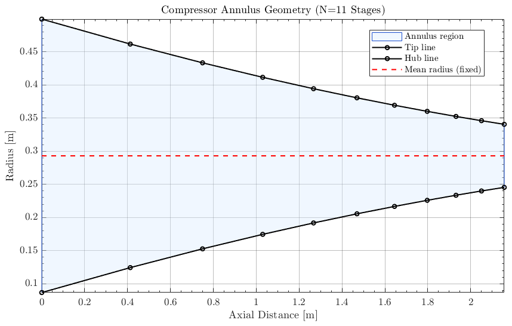
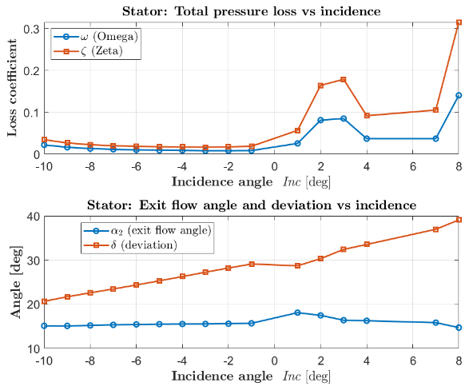
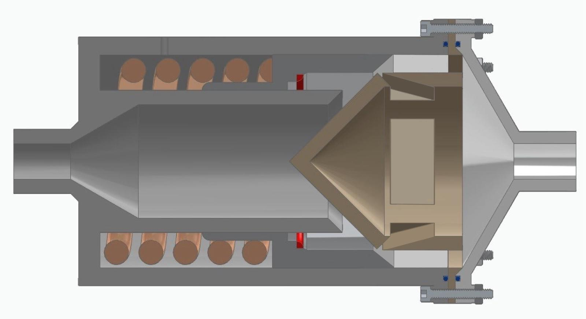
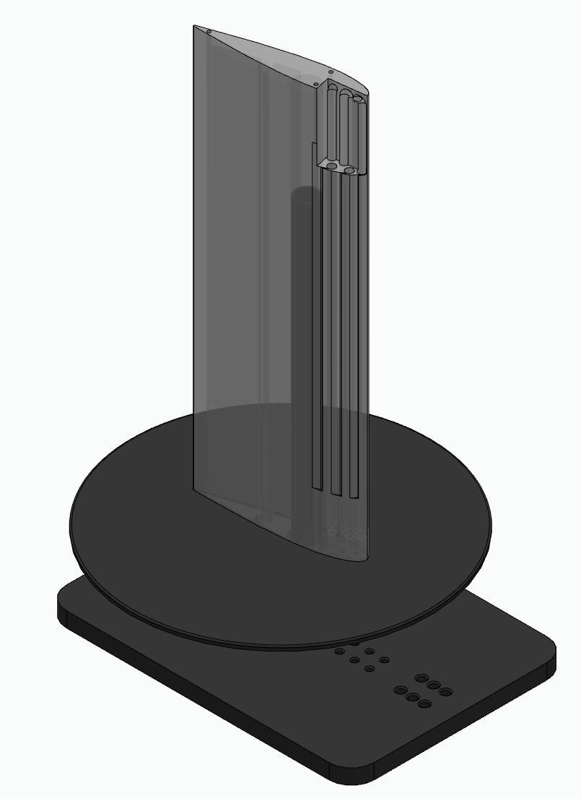
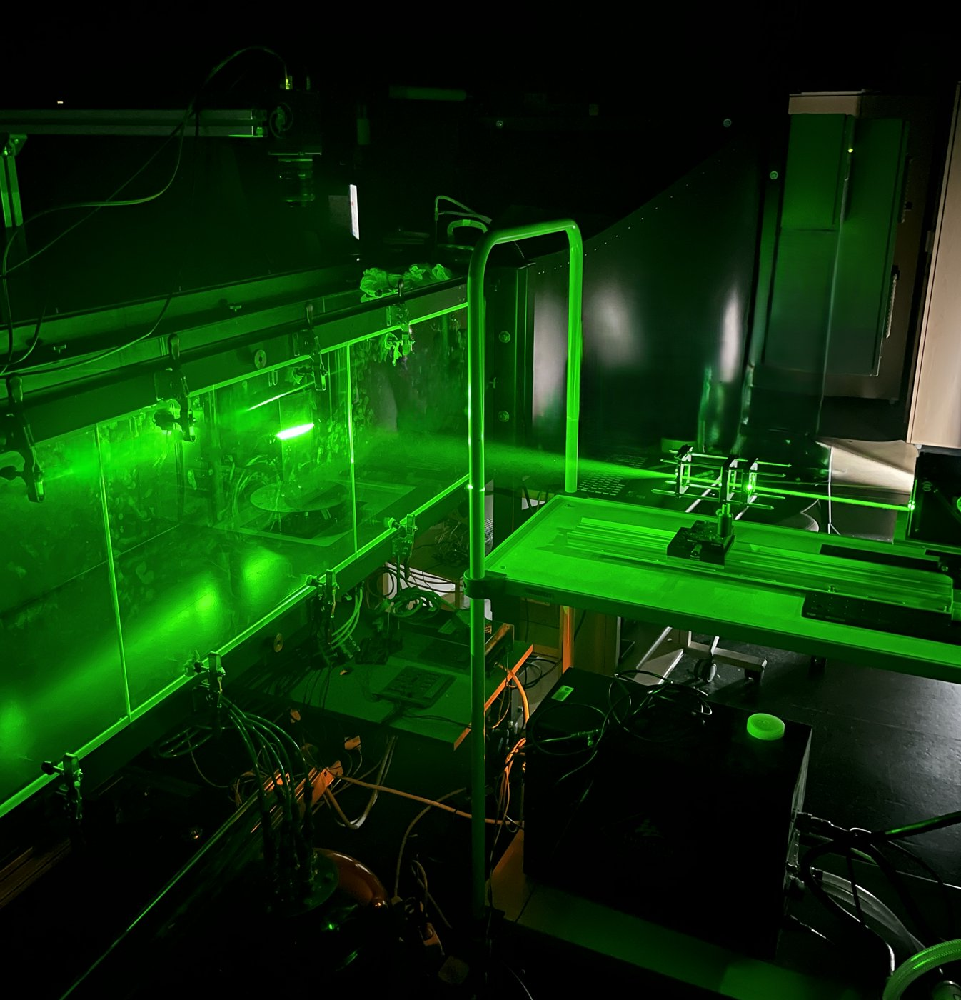
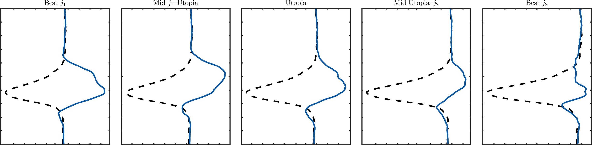
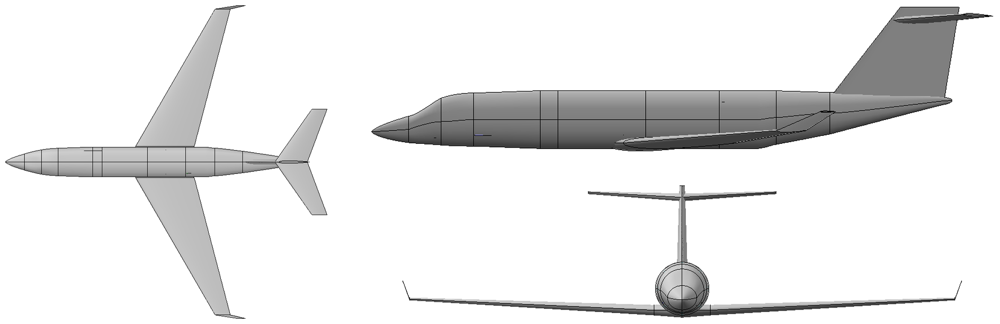

Universidad Carlos III de Madrid (UC3M)Sep 2025 – Dec 2025
Team lead · team of four, course projectDesigned
Design of an 11-stage intermediate pressure compressor for a commercial turbofan, turning at 8000 rpm within a 0.5 m tip radius. From 150 kg/s at 1.2 bar and 310 K, it reaches a 9.2 pressure ratio at 88.9% polytropic efficiency.
The mean radius drove the design, since it sets both the blade speed and the annulus height. I built the Smith chart in MATLAB, sweeping 161 × 161 combinations of flow and loading coefficient with Howell–Lieblein losses and keeping only the points within the Mach, deflection and de Haller limits. Repeating it for mean radii between 0.26 and 0.30 m, I placed the design point at 0.293 m, where the tip radius limit meets the aerodynamic limits and the stage loading is highest: 10.6 stages, rounded up to 11 for margin on every limit.
The first stage was turned into circular arc blade sections and run in MISES, a 2D viscous cascade solver: both rows turned the flow within 1.3° of the design exit angle with attached boundary layers, and incidence sweeps of about ±10° mapped their loss buckets. Extending the blades to hub and tip with a free vortex showed the weak point: the front annulus is so tall, with a hub to tip ratio of about 0.17, that the stator hub Mach number reaches 1.69, so a second iteration would raise the hub radius of the front stages.
As team lead I divided the work, handled each submission and discussed the challenges with the professor, and I was directly responsible for the Smith chart and the whole analysis of the MISES results.

Fig. 1Smith chart at a mean radius of 0.293 m: efficiency contours, design limits, tip radius line and the selected design point.

Fig. 2Stator blade sections at hub and tip, with solidity σ, camber θ and stagger ξ.

Fig. 3Hub, mean and tip radii along the 11 stages, with the annulus contracting towards the rear.

Fig. 4Stator loss coefficients, exit flow angle and deviation against incidence, from the MISES sweeps. Losses stay flat at negative incidence and rise once it turns positive, as the suction side boundary layer separates; the peak at +2 to +3° is most likely MISES struggling to converge near separation.
Project 02
Fuel Main Check Valve for a Kerolox Rocket Engine
Yellow Jacket Space Program (Vespula engine), Georgia Tech, AtlantaOct 2024 – Apr 2025
Propulsion Engineer · fluid systems subteamIntegrated · Tested · Designed
I joined the fluid systems subteam of the propulsion team. I spent my first two months getting to know the team: I helped integrate the kerolox sleeve valve used as the main fuel valve and run its cold flow test. In December I was given the design of the new fuel and oxygen main check valves (FMV and OMV), from scratch to prototype.
My contribution
Concept: I presented the Conceptual Design Review with a Pugh matrix and a first sketch. After the team's feedback, I simplified the geometry so it would be easier to machine.
Preliminary design: From February, I did all the PDR calculations in Excel: force balance, spring iterations, pressure drop (Darcy–Weisbach and local losses), material choice, stress analysis including Hertzian contact, orifice plate FEA in Abaqus, sealing, bolt and washer sizing, and the bill of materials; I also talked to spring suppliers about custom springs. I chose a Vespel seat, a polymer that works at cryogenic temperatures, so that both valves could use the same seat material.
Handover: I had to stop at the PDR to finish an undergraduate research project, so I walked the student who took over through our reasoning, the next steps and the calculations. Still open were the seal and seat FEA, a CFD of the pressure drop, the tolerance stack-up and the manufacturing drawings.
Status and what I learned
The last I heard, about six months ago, the valve had reached its Manufacturing Readiness Review. Vespula flew in April 2026 to a collegiate record of 56,590 feet, and I do not know whether it flew with the new valves or with the previous ones. The project taught me to work to deadlines, to accept that a design needs several iterations before it can be made, and to lean on the people around me, who know a lot and are happy to help.

Fig. 5CAD cross section of the fuel main check valve: body, poppet and spring (not the final version*).
*The final CAD and the Abaqus FEA of the orifice plate were in the PDR presentation, and I did not keep a copy of it. Since leaving the team I no longer have access to my files on the GT Vault SharePoint.
Project 03
Flow Control Wing for UAV Applications
National Institute for Aerospace Technology (INTA), MadridOct 2025 – Jun 2026
Aerodynamics Intern · Bachelor's thesisDesigned · Built · Tested
I joined INTA as an intern and did my bachelor's thesis on the same project: controlling the flow over a UAV wing at low Reynolds number with pulsed air jets from three leading edge slots, tuned by an optimiser in the wind tunnel.
My contribution
Design: I designed the NACA 0018 finite wing in Solid Edge and drew it for manufacture (appendix), fitting the internal channels so that each slot blows tangentially with the same pressure loss. I also ran its baseline polars in XFLR5.
Build: The wing was printed in ABS-like resin. With a PhD researcher I set up the pneumatic chain, from the air line and flow meter to the valve manifold, and the control electronics that drive the valves from the PC.
Testing: The first campaign used a Scanivalve, whose data was not repeatable, and then a hot wire, which was too slow, and its genetic algorithm lowered J1, the drag over the baseline drag, by adding momentum rather than cleaning up the wake. For the final campaign we moved to PIV with a second objective, J2, that penalises any departure of the wake from the freestream. I proposed a multi-objective Bayesian optimiser, and together we wrote the Python routine that runs each test in the same order, from the valves to the laser, camera and PIV processing.
Result
Each test dropped from more than 10 minutes to 3, so the 329 laws of the campaign took 3 days. The best one brought the wake profile 74% closer to the freestream while injecting only a third of the momentum of steady blowing.

Fig. 6Mounting base and wing assembly in Solid Edge, showing the internal air channels.

Fig. 7The model in the wind tunnel during a PIV run.

Fig. 8Wake profiles of five actuation laws along the Pareto front of the two objectives, from best J1 to best J2 (dashed: wing without actuation).
Project 04
Business Jet Conceptual and Preliminary Design
Georgia Tech, AtlantaJan 2025 – Apr 2025
Individual capstone projectDesigned
Design of an ultra-premium business jet, from its mission requirements and a Pugh matrix of five configurations to a complete final design. I covered weight, cost and constraint sizing, aerofoil selection with XFLR5, a wing study in AVL coupled to a MATLAB genetic algorithm to minimise induced drag, fuselage, cabin and tail sizing, and the weight and balance with its CG envelope.

Fig. 9Final design: top, side and front views.
Project 05
Propellant Sloshing in Rocket Tanks
LGST Lab, Georgia Tech, AtlantaJan 2025 – May 2025
Undergraduate Research AssistantTested
Experimental and analytical study of propellant sloshing in tanks of different geometries. I extracted the sloshing eigenfrequencies of each tank experimentally, tracking the edge of the free surface in MATLAB and applying a Fourier transform to the resulting signal. I also worked on analytical models linking pressure measurements at the bottom of the tank to the displacement of the first mode spring–mass model, as the basis for a Lyapunov-based control system to improve rocket stability.